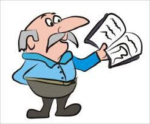
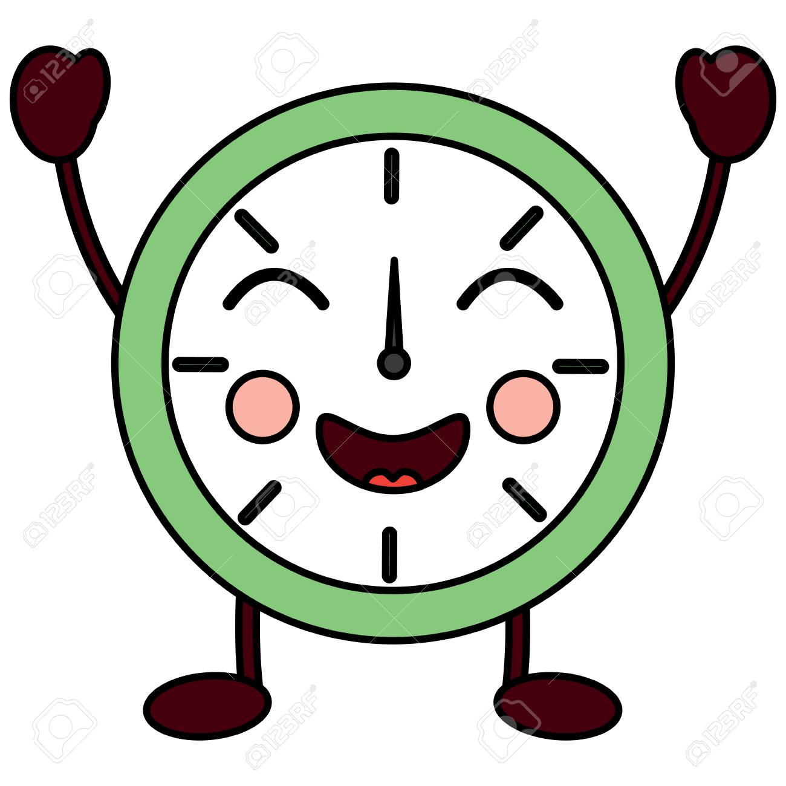

Las vocales
Las vocales son importantes porque le dan sonidos a las palabras, por lo tanto, es muy importante que las conozcan desde muy pequeños, porque luego deben juntarse con "sus amigas" las consonantes y así iniciar el hermoso camino de leer y escribir, comenzando por las sílabas, palabras, frases y oraciones.
Las vocales son las siguientes:
Abecedario.
Ahora que ya sabemos que son las vocales.
Veremos que es el Abecedario.
Conocer el abecedario es el primer gran paso para, más adelante, aprender a leer y escribir.
El abecedario o alfabeto es un grupo de letras que tiene un orden. Las letras son una representación por escrito de los sonidos que el ser humano utiliza para comunicarse.
El conjunto de vocales y consonantes es lo que llamamos el abecedario y, con él, podemos escribir y expresar oralmente todas las palabras de nuestro idioma.
Ahora veamos un video para aprender el ABECEDARIO con nuestro amigo Jorge el Curioso.
Sinonimos.
Ahora que ya sabemos que es el abecedario.
Veremos que son los Sinonimos.
Llamaremos sinónimo a aquellas palabras que tienen un significado igual o muy similar, pero que se escriben de manera diferente.
AHORA VEREMOS UNOS EJEMPLOS DE SINONIMOS.
Los sinónimos son palabras diferentes pero que tienen el mismo significado o uno muy parecido. Son palabras diferentes pero significan prácticamente lo mismo.
Ahora veamos un video que nos explica que son los sustantivos.
Antonimos.
Ahora que ya sabemos que son los sustantivos.
Veremos que son los Antonimos.
Los antónimos son palabras que tienen el significado contrario. Por eso diremos que son palabras que significan justamente lo opuesto.
Los antónimos son aquellas palabras cuyos significados son opuestos entre sí. Por ejemplo: luz – oscuridad. Las palabras antónimas pueden ser sustantivos.
(comienzo – final), adjetivos (limpio – sucio), verbos (comprar – vender) o adverbios (rápido – lento).
Ahora veamos un video que nos explica que son los antonimos.
Oracion
Ahora que ya sabemos que son los sustantivos y antonimos.
Veremos que es la Oracion.
La oración es un conjunto de palabras ordenadas que tiene un significado completo.
Las oraciones siempre llevan un verbo. El verbo es la palabra que indica la acción que se realiza.
Ahora veamos un video que nos explica que es la oracion.
Partes de la oración
Como vimos en el tema anterior, aqui veremos las partes de la oracion, esto es importante, porque entendiendo esto, vas a poder escribir tus primeras frases.
La oracion esta compuesta por:
El sujeto es la persona, animal u objeto que se encarga de realizar la acción, un ejemplo de sujetos son los siguientes: unos niños, una vaca o un lapiz

El verbo, son las acciones que hace el sujeto, por ejemplo: correr, bailar, comer, entre otros

Y el predicado es lo que completara tus oraciones
Por ejemplo:
El niño esta nadando en la piscina

El sujeto es "el niño", el verbo es "nadar" y el predicado es "en la piscina
Ahora te invito a que escribas en tu cuaderno tus primeras oraciones
Adjetivos.
Ahora que ya sabemos que es una oracion.
Veremos que son los adjetivos.
Los adjetivos son las palabras que complementan al sustantivo, lo acompañan y proporcionan información de éste, como sus propiedades y características. Cualquier particularidad que podamos decir sobre un sustantivo, será un adjetivo.
El adjetivo es la palabra que acompaña al sustantivo para complementarlo y expresar una de sus cualidades concordando en género y número, es decir, las palabras que nos dicen cómo es una persona, animal o cosa.
Ahora veamos un video que nos explica que es un adjetivo.
Verbos.
Ahora que ya sabemos que un adjetivo.
Veremos que son los verbos.
Los verbos son las palabras que indican la acción que realizan o el estado en el que están las personas, los animales, las plantas o las cosas.

Cada verbo tiene distintas formas verbales.
Las formas verbales se componen de una raíz y de una o varias desinencias.
La raíz es la parte común de todas las formas del verbo.
Las desinencias son las terminaciones que van después de la raíz y dan información sobre la persona, el número, el tiempo y el modo del verbo. Ejemplo: Nosotros salt– amos.
Las desinencias expresan la persona (primera, segunda o tercera) y el número (singular o plural) de quien realiza la acción. Ejemplo: Yo bail–o -> primera persona del singular.
Ahora veamos un video que nos explica que es un verbo.
La narración

La narración es la manera de escribir o contar un historia ya sea real o escrita, donde hay un narrador, quien cuenta la historia, personajes, acciones, un tiempo en que sucede la historia
A continuacion, te dejamos una pequeña narracion de un cuento:
Elementos de la narración
La narracion esta compuesta por:
Narrador: Quien cuenta la historia
Personajes: Quienes participan en la historia
Acciones: Los hechos que suceden durante la historia
Espacio: Es el lugar donde ocurre la historia
Tiempo: Es el momento en que sucede la historia
Trama: Es la historia en si, como la que vimos en el anterior tema, la historia ya completa